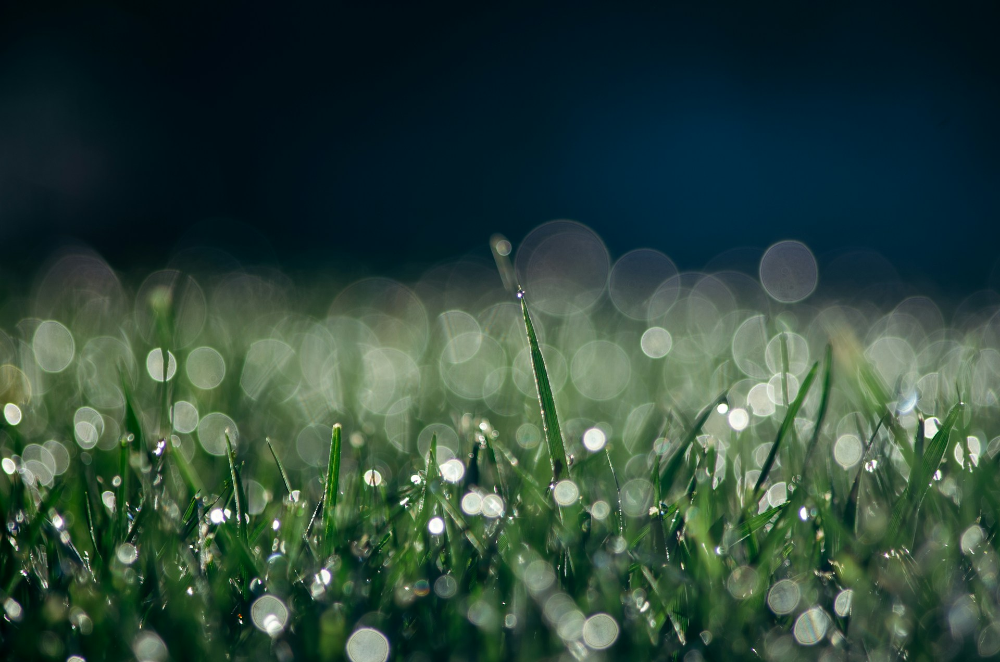

Spindle chooses to joyously swing herself out of her cozy web and into the forest on the horizon. As she gets closer, the cool crispness of damp air tickles her spines.
She crawls silently across the damp dirt, feeling the cool earth beneath her eight tiny legs. The air is thick with the aroma of damp earth and fresh vegetation.
As Spindle travels forward, she eventually comes across towering blades of grass, their slender outlines obstructing her view of the world beyond. She pauses to ponder her alternatives. Should she climb across the grass, hoping to get a look of what's ahead? Or should she find a method to pass through the dense undergrowth, possibly by discovering a hidden path to explore?
